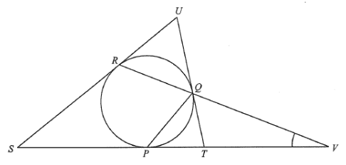

DSE 2023 · 卷二 · Q38
切線與弦的夾角
圓形幾何 · 切線性質 · 選擇題
題目
圖中 $ST$ 為圓的切線，$TU$ 為圓於 $Q$ 的切線，$RQ$ 延長與 $ST$ 延長交於 $V$。若 $\angle PSR=34^\circ$、$\angle QPT=46^\circ$，求 $\angle PVQ$。
A.
$17^\circ$
B.
$22^\circ$
C.
$27^\circ$
D.
$28^\circ$

原題附圖
題解
34°
46°
P
Q
R
T
U
ST、TU 為切線
圖：$ST$、$TU$ 為切線，$RQ$ 延長交 $ST$ 於 $V$；$\angle PSR=34^{\circ}$、$\angle QPT=46^{\circ}$（題解繪）
第 1 步
設未知角
設 $\angle PVQ=x$。
第 2 步
切線與弦的內錯弓形角
內錯弓形角
\(\angle(\text{切線},\text{弦})=\angle(\text{弦在另一弓形所張的圓周角})\)
切線與弦的夾角，等於該弦在另一弓形所張的圓周角。
$PT$ 切圓於 $P$、$PQ$ 為弦：\[ \angle PRQ=\angle QPT=46^\circ \]
第 3 步
用外角把 $\angle RPV$ 表示成 $x$
在 $\triangle P S V$ 中，$R$ 在 $PS$ 的延長線上，外角\[ \angle RPV=\angle PSV+\angle PVS=34^\circ+x \]再由 $\angle QPT=46^\circ$，得\[ \angle RPV=(34^\circ+x)+46^\circ=80^\circ+x \]
第 4 步
在 $\triangle PRV$ 用內角和
\[ 46^\circ+(80^\circ+x)+x=180^\circ \]\[ 126^\circ+2x=180^\circ\Rightarrow x=27^\circ \]
第 5 步
結論
$\angle PVQ=27^\circ$，即選項 C。
答案
C
（$27^\circ$）
練習
同類新題
題目.
圓的切線與弦 $AB$ 的夾角為 $63^\circ$，求弦 $AB$ 在另一弓形所張的圓周角。
顯示題解
第 1 步.
由內錯弓形角定理，兩角相等
答案：$63^\circ$
‹ 上一題
目錄
下一題 ›